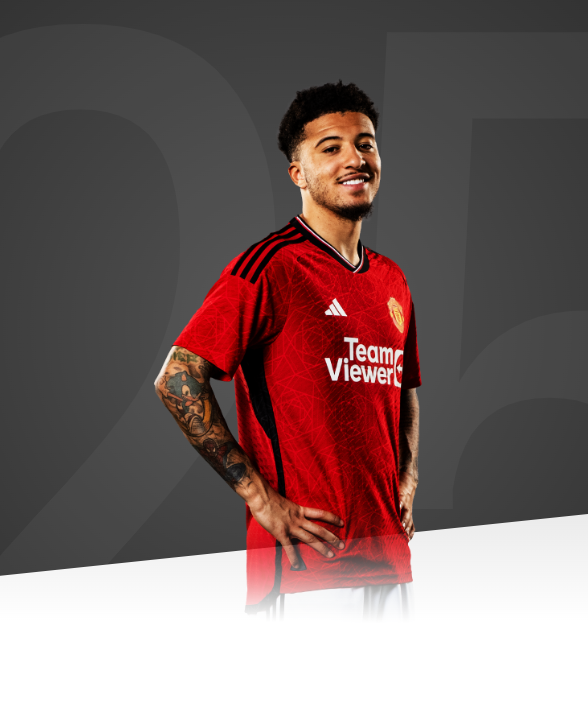

Growing up, United was one of the biggest clubs that everyone knows. So I'm very happy to be wearing this jersey now.

AGE
23
APPEARANCES
82
CLEAN SHEETS
12
BIOGRAPHY
In Jadon Sancho, Manchester United have a thrilling, tricky winger whose game is inspired by the dancing samba style of Brazil's greatest forwards and the gritty street football of south London.
After four fantastic seasons at Borussia Dortmund in Germany’s Bundesliga, Sancho joined the Reds in July 2021; a 21-year-old mature beyond his years. His play is fearless, skilful and expressive and he thrives when isolating defenders and taking them on, one-on-one.
Born in London on 25 March 2000, Sancho grew up in Kennington, idolising Ronaldinho and playing cage football amid the capital's high-rise buildings. He joined Watford's youth set-up aged seven and moved into the club's partner school as a boarder four years later, thus avoiding the long travel time across from south London.
Aged 14, Sancho left the capital and its surrounds, joining Manchester City where he excelled in the youth set-up. Regularly dominating games, it quickly became clear that Sancho was one of English football's most exciting young talents, a fact confirmed when he was named Player of the Tournament at the Under-17 European Championship in May 2017.
In the summer of that year, Sancho left England before he'd made a single senior appearance, bravely moving abroad in search of first-team football, which he found at Borussia Dortmund after an £8m transfer to Germany.
The London-born winger gradually settled into life in a new country and, despite immediately handing the 17-year-old the number seven shirt, Dortmund were initially cautious in their approach. Sancho made his Bundesliga debut as a late substitute on 21 October 2017, his first start the following January, and then truly ignited the spark with a goal – his first in the league – and two assists in a 4-0 win against Bayer Leverkusen in April 2018.
From there, he kicked on in stunning fashion, with October 2018 being an outstanding month. Within the space of a few weeks, Sancho made his England debut, became the first player born in the 2000s to score in the UEFA Champions League when he struck against Atletico Madrid, and was named Bundesliga Player of the Month for the first time.
A place in the 2018/19 Bundesliga Team of the Season was inevitable after a record-breaking campaign from the teenager, in which he scored 12 goals and assisted a further 14. Such proficiency in attack catapulted his reputation skywards and he delivered once again in 2019/20, as he was named in the Team of the Season for a second consecutive year after posting a stunning 17 goals and 17 assists in 32 league games. A hat-trick – his first in senior football – against SC Paderborn in May 2020 was made more notable by the celebration for his first goal, in which Sancho revealed a T-shirt reading 'Justice for George Floyd'. The gesture demonstrated the young man's desire to use football as a driver for social change, something he has continued to do. A previous project saw him help build a new football pitch in his old neighbourhood in south London.
On 13 May 2021, the Englishman wrapped up his career in Germany in the perfect fashion when he scored a double against RB Leipzig to help Borussia Dortmund win the DFB-Pokal [the German Cup]. He scored 50 goals and made 64 assists in 137 games for Dortmund and that incredible record meant it was no surprise United wanted to sign him. A fee agreement was announced on 1 July 2021, while Sancho was representing England at Euro 2020, with the transfer being formally completed three weeks later.
Football is about expressing yourself,” Sancho has explained in the past. He's a player who plays for fun and to excite, without fear and with a burning desire to beat his man.
Jadon's debut season at Old Trafford was mixed, with the winger remaining patient before being handed his first United start, in our 1-0 away win at Wolves on 29 August 2021. Sancho scored his first goal for the Reds in a 1-1 away draw with Chelsea at the end of November, but he didn't score again until February.
However, Jadon's output increased and we then saw his true ability, with the winger recording two goals and three assists across a six-match period. The winger missed the latter stages of the season due to tonsillitis, but finished his debut campaign with the Reds having racked up 38 appearances in all competitions, with five goals and three assists, and the promise of much more to come.
Sancho started the 2022/23 season in good form, notably scoring the opening goal in our 2-1 win over Liverpool at Old Trafford in August, Erik ten Hag's first competitive victory as boss. From November to February, Jadon didn't feature in the Reds' squad, but returned to rapturous applause, scoring a vital equaliser at home against Leeds.
He featured regularly for Erik in the remaining part of the season, including in the victorious 2023 Carabao Cup final. The winger finished the campaign with seven goals and three assists to his name.